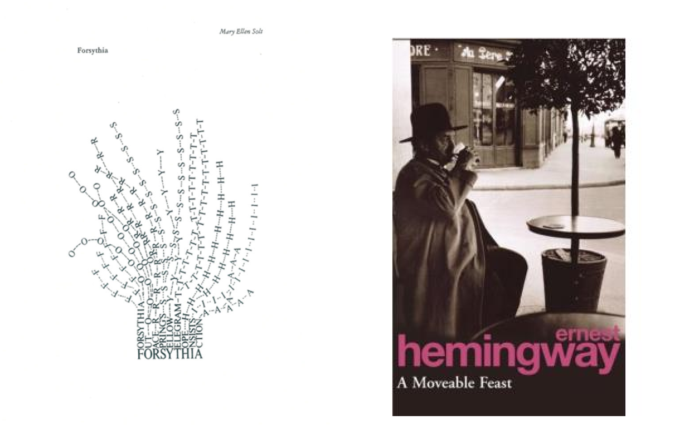
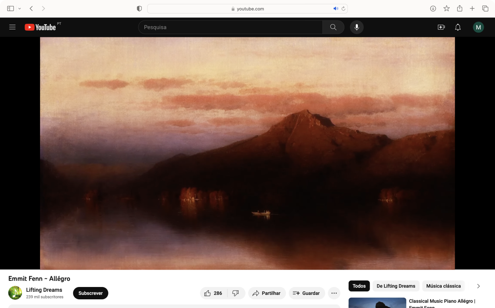

The concept of the poem’s animation relates with the idea of spring. This was elaborated by exploring the meaning of the poem in cause — Forsythia by Mary Ellen Solt — and also the meaning of spring. For this last one, I found interesting to explore an excerpt from the chapter “A False Spring” from A Moveable Feast by Ernest Hemingway.
Forsythia represents the arrival of good weather, the blossoming of flowers and everything good that spring brings with it. On the other hand, the American author portrays spring as a promised happiness, but that ends up to fail and be unfulfilled.
The poem animation intends to portrait spring and its forthcoming characteristics as a supposed prosperity time, but also an unfulfilled one.
The animation was made in After Effects — licensed application —, and the music played is Allégro by Emmit Fenn, download through Youtube Studio on the 8th November 2020 — with Youtube Audio Library License.